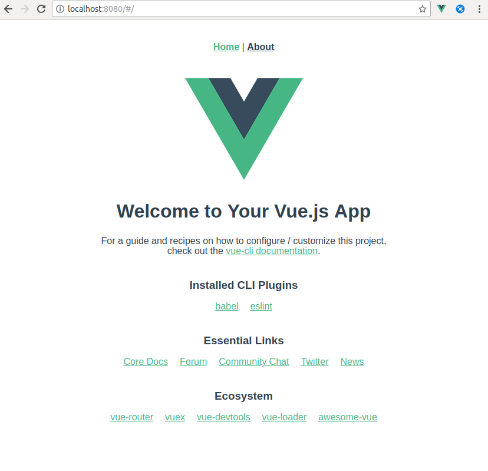
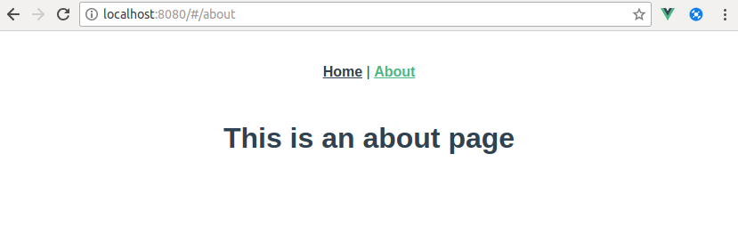
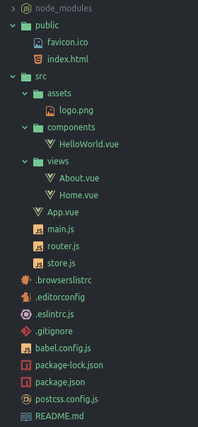
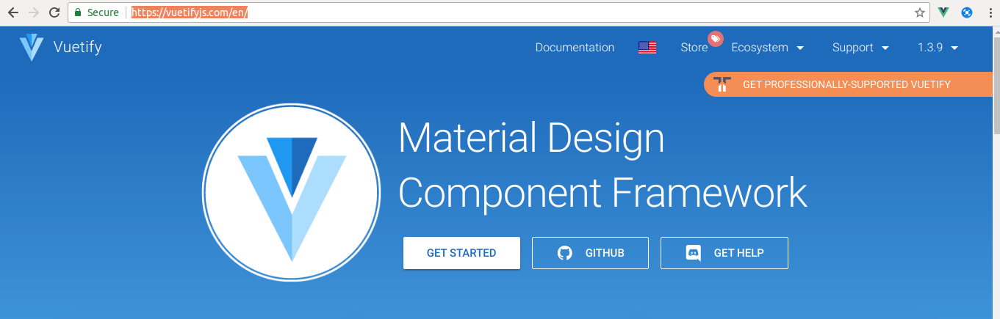
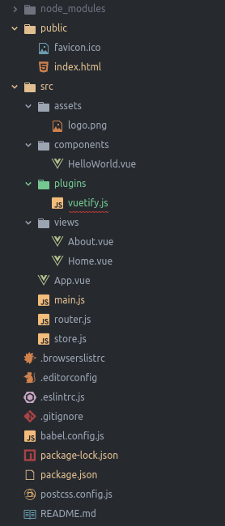
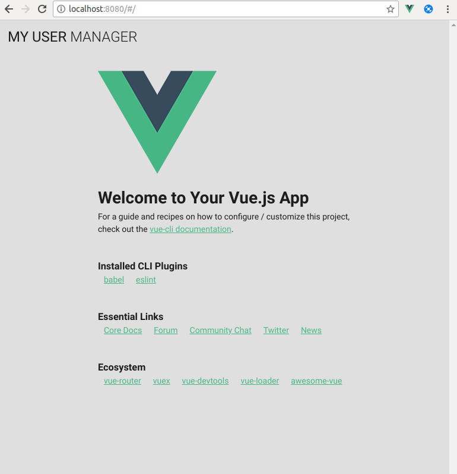

Instalación
vue cli
Se requiere instalar previamente la version 3 de vue cli.
$ sudo npm install -g @vue/cli
Creación del proyecto vue
Una vez instalado podemos generar el nuevo proyecto vue con el comando vue create.
$ vue create example
Vue CLI v3.1.3
? Please pick a preset: (Use arrow keys)
default (babel, eslint)
❯ Manually select features
Vue CLI v3.1.3
? Please pick a preset: Manually select features
? Check the features needed for your project: Babel, Router, Vuex, Linter
? Use history mode for router? (Requires proper server setup for index fallback in production) No
? Pick a linter / formatter config: Standard
? Pick additional lint features: Lint on save
? Where do you prefer placing config for Babel, PostCSS, ESLint, etc.? In dedicated config files
? Save this as a preset for future projects? No
Vue CLI v3.1.3
✨ Creating project in _path_/example.
⚙ Installing CLI plugins. This might take a while...
> yorkie@2.0.0 install _path_/example/node_modules/yorkie
> node bin/install.js
setting up Git hooks
can't find .git directory, skipping Git hooks installation
added 1109 packages in 21.611s
🚀 Invoking generators...
📦 Installing additional dependencies...
added 54 packages, updated 2 packages and moved 5 packages in 10.913s
⚓ Running completion hooks...
📄 Generating README.md...
🎉 Successfully created project example.
👉 Get started with the following commands:
$ cd example
$ npm run serve
El proyecto generado contiene dos ventanas Home y About controladas por vue router y un store controlado por vuex.
Home

About

Estructura inicial de carpetas creada por el vue.

El fichero principal de la aplicación vue se encuentra en src/main.js. En éste fichero se configura y crea el objeto vue.
src/main.js
import Vue from 'vue'
import App from './App.vue'
import router from './router'
import store from './store'
Vue.config.productionTip = false
new Vue({
router,
store,
render: h => h(App)
}).$mount('#app')
Instalar Vuetify
En este caso se ha escogido vuetify como framework de componentes ya que está basado en Material Design.

El nuevo cli de vue facilita la instalación de vuetify.
$ vue add vuetify
📦 Installing vue-cli-plugin-vuetify...
> yorkie@2.0.0 install _path_/example/node_modules/yorkie
> node bin/install.js
setting up Git hooks
can't find .git directory, skipping Git hooks installation
+ vue-cli-plugin-vuetify@0.4.6
added 1164 packages in 12s
✔ Successfully installed plugin: vue-cli-plugin-vuetify
? Choose a preset: Configure (advanced)
? Use a pre-made template? (will replace App.vue and HelloWorld.vue) No
? Use custom theme? No
? Use custom properties (CSS variables)? No
? Select icon font Material Icons
? Use fonts as a dependency (for Electron or offline)? No
? Use a-la-carte components? Yes
? Select locale English
🚀 Invoking generator for vue-cli-plugin-vuetify...
📦 Installing additional dependencies...
added 12 packages in 7.974s
⚓ Running completion hooks...
✔ Successfully invoked generator for plugin: vue-cli-plugin-vuetify
The following files have been updated / added:
src/plugins/vuetify.js
package-lock.json
package.json
public/index.html
src/main.js
You should review these changes with git diff and commit them.
La estructura del proyecto una vez añadido vuetify sería la siguiente.

Al ejecutarse encontramos un error detectado por ESLint.
npm run serve
> example@0.1.0 serve _path_/example
> vue-cli-service serve
INFO Starting development server...
98% after emitting CopyPlugin
WARNING Compiled with 1 warnings
Module Warning (from ./node_modules/eslint-loader/index.js):
error: Unexpected trailing comma (comma-dangle) at src/plugins/vuetify.js:6:17:
4 |
5 | Vue.use(Vuetify, {
> 6 | iconfont: 'md',
| ^
7 | })
8 |
1 error found.
1 error potentially fixable with the `--fix` option.
You may use special comments to disable some warnings.
Use // eslint-disable-next-line to ignore the next line.
Use /* eslint-disable */ to ignore all warnings in a file.
App running at:
- Local: http://localhost:8080/
- Network: http://192.168.0.24:8080/
Note that the development build is not optimized.
To create a production build, run npm run build.
ESLint
Gracias al comando lint configurado en el proyecto vue podemos controlar y arreglar los errores de calidad de código en el proyecto.
$ npm run lint
> example@0.1.0 lint _path_/example
> vue-cli-service lint
The following files have been auto-fixed:
src/plugins/vuetify.js
DONE All lint errors auto-fixed.
$ npm run serve
> example@0.1.0 serve _path_/example
> vue-cli-service serve
INFO Starting development server...
98% after emitting CopyPlugin
DONE Compiled successfully in 14557ms
App running at:
- Local: http://localhost:8080/
- Network: http://192.168.0.24:8080/
Note that the development build is not optimized.
To create a production build, run npm run build.
